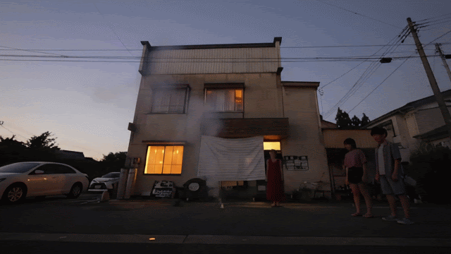

- 14:05抵達仙台空港（Sendai Airport）（香港快運 UO890 09:00–14:05），辦理入境與提取 4WD 休旅車（約 2 小時緩衝）。
- 16:05經磐越自動車道（Ban-etsu Expressway）途經豬苗代湖（Lake Inawashiro / 猪苗代湖）前往會津若松（Aizuwakamatsu / 会津若松）（約 1 小時 55 分）。
- 18:00於會津若松（会津若松）超市或酒鋪採買會津地酒、刺身及晚餐食材（亦可留待 Day 2 上午於末廣酒造 嘉永蔵參觀試飲）。
- 18:30西行前往西会津（Nishiaizu / 西会津）（約 35 分），於 20:00 前完成入住。
- 晚間於古民家餐桌享用晚餐，並在書坊 lounges 小酌放鬆。
下榻住宿
暮らしの体験宿 ひととき（Kominka Stay Hitotoki）（整棟包棟、2間樓上臥室、2個洗手間、免費泊車）
| 早餐 Breakfast | 午餐 Lunch | 晚餐 Dinner |
|---|---|---|
| 機上 / 自行安排 | 機上 / 機場輕食 | 古民家晚餐 / 會津地酒與小食 |